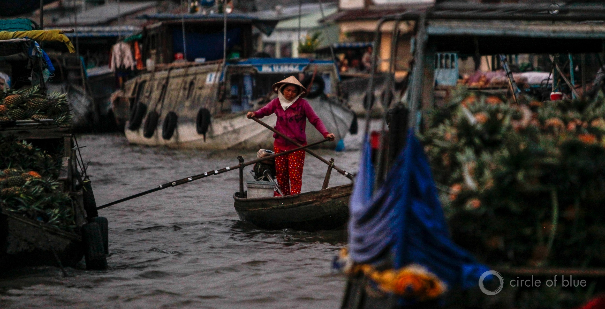
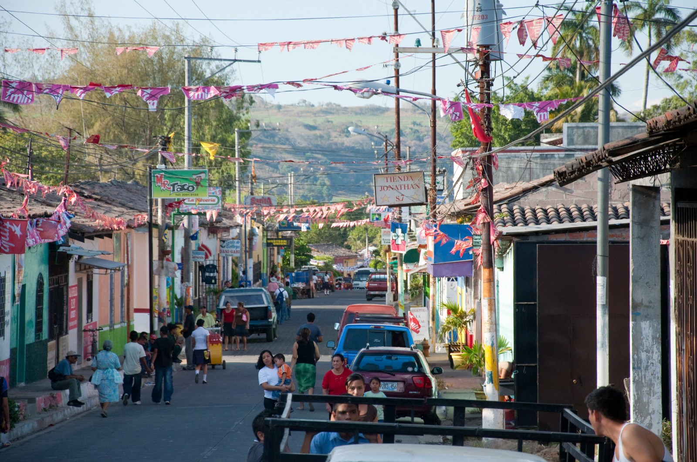
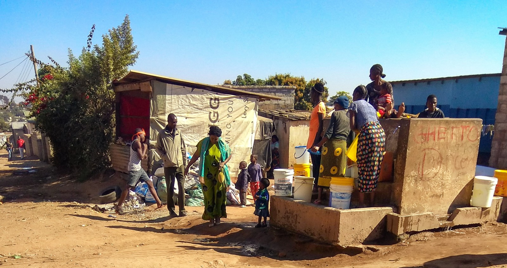

HotSpots H2O: Worsening Drought and Conflict Loom in Southeast Asia
More than 66 million Southeast Asians had their lives disrupted by drought in the past three decades.Dry conditions aggravated poverty and inequality, and inflamed regional conflicts.Unless governments take decisive action soon, the future could be worse, a new report warns.
'Southeast Asia has many dry years ahead.This should come as no surprise.Many parts of the region have regularly been stricken by droughts that have destroyed crops, heightened fire risks, and led to acute shortages of drinking water,' writes Armida Salsiah Alisjahbana, executive secretary of the United Nations Economic and Social Commission for Asia and the Pacific (ESCAP), in the report’s introduction.
'As droughts degrade the natural environment, people find themselves competing for increasingly scarce land and water resources,' Alisjahbana added.
The Ready for the Dry Years report details a series of recent droughts in the region, and advises government action to reduce economic and social risks from future dry spells.It was released on April 19 by ESCAP and the Association of Southeast Asian Nations.
The report notes that 80 percent of local conflicts that occurred in Southeast Asia between 1981 and 2001 took place in areas that had endured drought at some point.
Researchers in Norway and Sweden have also examined the link between drought and conflict in Africa and Asia, and found that dry conditions and violence often influence each other.
'[D]rought can contribute to sustaining conflict, especially for agriculturally dependent groups and politically excluded groups in very poor countries,' the researchers explained in their 2016 study.They called environmental shocks and violent conflict a 'vicious circle' in which vulnerability to one increases the risk of the other.
As climate change alters and intensifies weather patterns, Southeast Asia will likely become increasingly exposed to drought, and in turn, the 'vicious circle' of violence and environmental shock.The ESCAP report noted an 88 percent correlation between conflict risk and natural disasters in the region.
In order to prepare for coming dry spells, the report recommends three key government interventions.First, is better forecasting.Drought risk assessments and early warning services can warn farmers and officials that dry days are ahead.Second, is a shift toward insurance schemes, early cash transfers, and other financial tools.These interventions are more proactive than handing out food aid after failed rains.Lastly, the report argues that conflict can be reduced by developing relationships between competing groups before a drought crisis.
'More dry years are inevitable, but more suffering is not,' writes Alisjahbana.'Timely interventions now can reduce the impacts of drought, protect the poorest communities, and foster more harmonious societies.'
Posted On: 2019-04-29T00:00:00
Posted By: Kayla Ritter



Content Date: 2019-04-29
Download Date: 2021-05-12
Document ID: L0C04B38H